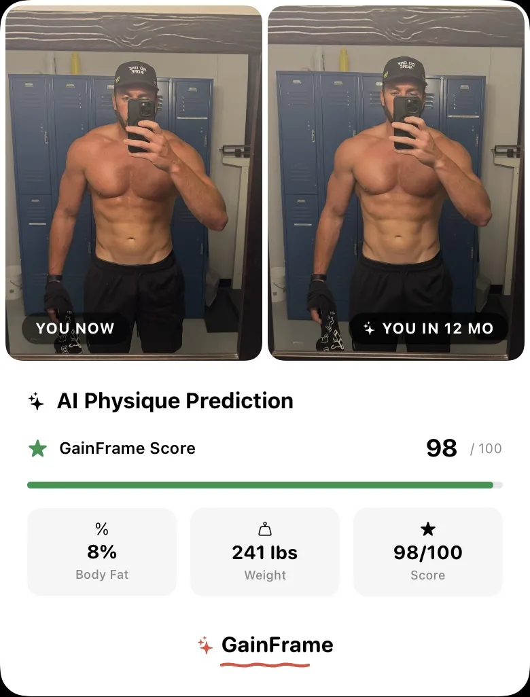

How to Measure Muscle Gain Without a Scale
Your scale can't tell the difference between muscle and fat. Here's how to track real muscle gain using progress photos, AI body composition analysis, and data that actually means something.

The beta is live — try it free.
Join the Beta on TestFlightYou've been training for three months. Your lifts are going up. You look different in the mirror. But you step on a scale and the number hasn't moved — or worse, it's gone up.
If you've ever felt defeated by a scale reading, you already know the problem: scales measure total body weight, not what that weight is made of. Gaining 5 pounds of muscle while losing 3 pounds of fat shows up as +2 on the scale. That's a massive win — but a bathroom scale makes it look like you went backwards.
So how do you actually track muscle gain? Here are the methods that work — from free and simple to AI-powered and precise.
Why the scale lies about muscle gain
Before we get into solutions, it's worth understanding why the scale fails:
- Muscle is denser than fat. You can gain muscle, lose fat, and look dramatically different — while weighing the same.
- Water fluctuates 2-5 lbs daily. Sodium, carbs, hydration, and stress all change your water weight. That "2 lbs overnight" wasn't muscle or fat — it was water.
- Body recomposition is invisible to scales. The most common beginner transformation — losing fat while gaining muscle — can produce zero net weight change for months.
The scale tells you one number. Your physique is thousands of variables. You need better instruments.
Method 1: Progress photos (the gold standard)
Progress photos are the single most reliable way to track muscle gain over time. The mirror lies because you see yourself every day — changes that happen gradually are invisible to you. But comparing two photos from eight weeks apart makes those changes obvious.
The key to useful progress photos:
- Same pose every time. Front relaxed, front flexed, side — pick your poses and repeat them. Matching poses is the only way to do meaningful comparisons.
- Same lighting and distance. Overhead lighting makes you look lean. Side lighting exaggerates shadows. Pick one setup and stick with it.
- Consistent schedule. Weekly or biweekly. Morning photos (before food, after hydrating) give the most consistent baseline.
The problem with progress photos alone: they're subjective. You're eyeballing the difference. Is your chest actually bigger, or is the lighting slightly different? Did you lose fat, or is the angle more flattering? That's where AI body composition analysis changes the game.
Method 2: AI body composition from your photos
Instead of staring at two photos and guessing, AI body composition analysis extracts actual data from your progress photos:
Body Fat %
Estimated from your photo — no calipers, no DEXA appointment, no $150 scan. Track it over time and watch the trend.
Muscle Group Scoring
Individual scores for 12 muscle groups — shoulders, chest, arms, back, legs, core — rated from Needs Work to Strong.
Physique Score
A single 1-100 number that captures your overall physique development. Watch this number climb as you build muscle.
FFMI (Fat-Free Mass Index)
The gold standard metric for muscle mass relative to height. A rising FFMI means you're gaining lean tissue.
With GainFrame, you tap a photo and get all of this in seconds. Do it monthly and you have a data-driven timeline of your muscle gain — not just a feeling that things are improving.
Body fat dropping while weight stays the same? That's recomposition — you're gaining muscle and losing fat simultaneously. AI body composition from a photo is the easiest way to confirm this is happening.
Method 3: AI physique predictions
Once you have enough progress photos (three or more of the same pose), AI can do something a scale never could: predict where your muscle gain is headed.
GainFrame's Future Physique feature analyzes your rate of change across photos and generates:
- An AI-generated image of your predicted physique at 3, 6, or 12 months
- Projected stats — body fat %, weight, FFMI, and physique score
- Key improvement areas — which muscle groups will change the most
- Specific training recommendations to accelerate your results
This is what the prediction export looks like — a side-by-side of "You Now" vs. your projected self, with the data to back it up:
The value here isn't pixel-perfect accuracy — it's trajectory confirmation. Is your current program actually building muscle at a rate that will get you where you want to be? Or do you need to adjust?
Method 4: Strength progressions
If your big lifts are going up, you're almost certainly gaining muscle. Progressive overload is the driver of hypertrophy — so tracking your lifts is an indirect but reliable muscle gain indicator.
The limitation: strength gains can come from neural adaptations (especially in beginners), better form, or improved recovery — not just muscle growth. Strength alone doesn't tell you where you're gaining or whether you're also losing fat.
That's why the best approach combines strength tracking with visual evidence. Apps like Hevy track your workout volume, and GainFrame auto-attaches that data to the progress photo taken on the same day — so you can correlate volume increases with visible changes.
Method 5: Clothing fit and visual cues
Don't underestimate the basics. If your shirts are tighter in the shoulders but looser in the waist, you're gaining muscle and losing fat. If your watch band needs loosening because your forearms grew — that's real progress.
The problem with this method: it's imprecise and hard to track over time. But combined with photos and AI data, it's a useful gut check.
The best approach: combine methods
No single method tells the full story. Here's what we recommend:
- Take weekly progress photos. Same pose, same lighting. This is your primary data source for tracking muscle gain.
- Run AI body comp monthly. Tap your photo and get body fat %, FFMI, and muscle group scores. Track the trend, not individual readings.
- Weigh yourself daily, average weekly. The scale isn't useless — it just needs context. A weekly average removes water noise.
- Track your lifts. Progressive overload confirms you're stimulating growth. Pair with photo data for the complete picture.
- Check your predictions quarterly. Run an AI physique prediction every 3 months. Compare your actual progress to the projection and adjust your program.
The scale measures gravity's pull on your body. Your phone camera, combined with AI, measures what your body is actually made of — and where it's headed.
Start tracking what matters
Your gym selfies aren't vanity — they're data. Import them into GainFrame, get AI body composition on every photo, and build a timeline that shows exactly how your physique is changing — no scale required.
Related posts
- 7 Best Body Transformation Apps in 2026 (Ranked & Compared)
- How to Calculate Body Fat from a Photo Using AI
- Future Physique: See Where Your Body Is Headed
- Understanding Your AI Physique Score
- 5 Tips for Better Progress Photos
Try GainFrame free
AI body composition from your progress photos. No account needed.
Join the Beta on TestFlightRequires iOS 17+ · iPhone only